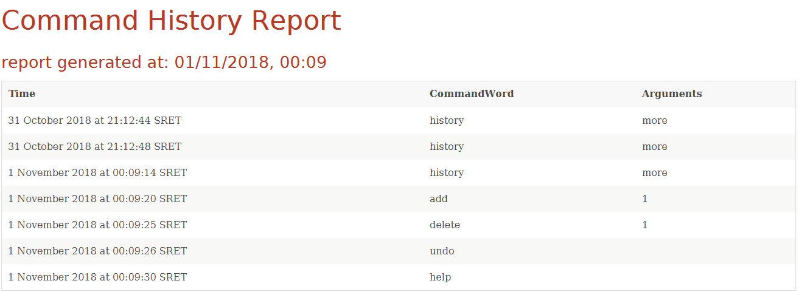

PROJECT: Thane Park
1. Overview
This portfolio highlights my key contributions during the NUS CS2103 module on 2018, with the challenge of developing a Command Line Interface (CLI) from an existing AddressBook application.
ThanePark is a theme park management application primarily designed for theme park operators. This application was developed under the constraint of CLI, yet it displays useful information at a glance through utilisation of JavaFX to render the Graphical User Interface (GUI). It is primarily written in Java and jointly developed by 4 aspiring Software Engineers in NUS CS2103 module.
2. Summary of Contributions
-
Major enhancement: Developed features that improve the accessibility of the ThanePark application to improve user productivity.
-
What it does: It facilitates finding help on specific commands, assist users in completing commands, provide a mechanism to log and retrieve command history and gives users important information at a glance.
-
Justification: The primary role of theme park operators is to manage the ride they are stationed at. By making the application easier to use, operators will not find using the application a chore, can quickly perform required actions and focus on managing their ride.
-
Highlights: This enhancement affects existing commands and can be easily extended on addition of new commands. There is an added challenge of reducing dependencies across the
Logic,Model,StorageandUIcomponents of ThanePark. -
Credits: j2html library to aid formatting of HTML reports.
-
-
Code contributed: [Functional code] [Test code] {give links to collated code files}
-
Other contributions:
-
Project management:
-
Managed releases
v1.1-v1.3(3 releases) on GitHub
-
-
Enhancements to existing features:
-
Updated the GUI color scheme (Pull requests )
-
-
Community:
-
Tools:
-
Set up Travis CI, coveralls and autodoc to the project
-
Integrated a third party library (j2html) to the project (#79)
-
-
3. Contributions to the User Guide
Given below are sections I contributed to the User Guide. They showcase my ability to write documentation targeting end-users. |
3.1. Viewing help: help
Display short summary of important commands. A summarized help
sheet should appear as shown below.

Format: help
Extended usage of help command: help [option]. [option] can take on the value of
more or any command word. If provided [option] is invalid, an error message will be
shown (soon a default help message will be shown).
|
Examples:

|

|
3.2. Suggesting commands: {tab}
Displays suggested list of commands when TAB is pressed.
Format: TAB
Examples:
|
3.3. Viewing history of previous commands: history
Display previous user inputs during this session. Does not include the executed history itself.
Format: history
Extended usage of history:Use history more to generate a report of all cumulative command history.
|
ThanePark stores the command history in commandHistory.xml. If the storage file size exceeds 5MB,
no new command history will be logged. Additionally, if the file format is changed, the program will
restart the collation of history.
|
Examples:
|

|
4. Contributions to the Developer Guide
Given below are sections I contributed to the Developer Guide. They showcase my ability to write technical documentation and the technical depth of my contributions to the project. |
4.1. Current Implementation
The accessibility feature is responsible for making ThanePark application easier to use.
It can be decomposed into the following components:
Help
The help mechanism is facilitated by the ShowHelpRequestEvent.
When the user executes a HelpCommand, the required level of help is encoded in ShowHelpRequest.
This event is subscribed to by MainWindow, which will load the respective help page in the required window
(BrowserPanel or HistoryWindow). These interactions are illustrated in the class diagram below:

Autocomplete
The autocomplete/suggest mechanism is facilitated by SuggestCommand.
It extends Command and serves as a special kind of Command that cannot be directly invoked by the LogicManager.
A new instance of SuggestCommand is created whenever ThaneParkParser fails to find a matching CommandWord,
or when TAB is pressed inside the Command Box. See the 2 figures below:

The application will then proceed with executing the SuggestCommand, which returns prefix-matched Command s.
These matching Command s are reflected in both CommandResult and ShowHelpRequestEvent, which will in turn update
ResultDisplay and CommandBox text. See figure below:
History
The history mechanism is facilitated by CommandHistory and CommandsLogCenter.
CommandHistory maintains the history as a list of user inputs during the session,
and interfaces with CommandsLogCenter to handle the retrieval and persistent storage
of user inputs executed across sessions.
Given below are 2 example usage scenarios to illustrate the behavior of the history mechanism.
-
Example scenario 1: User requests for current session’s history.
Step 1. User executeshistory.
Step 2. The list of user inputs in the current session is retrieved fromCommandHistory.
Step 3. ANewResultAvailableEventis raised within theLogiccomponent. Step 4. The result panel displays the list of user inputs upon notification by the event. -
Example scenario 2: User requests for cumulative history.
When the cumulative history of all commands is requested,
4.2. Design Considerations
Aspect: Handling Tab autocomplete
-
Alternative 1 (current choice): Handle autocomplete through events and
SuggestCommand.-
Pros: Flexible. Easy to modify event behaviors for
SuggestCommandEventandNewResultAvailableEvent. Modular design that can be easily reused to create other autocomplete features. -
Cons: Difficult to implement as it requires some understanding of the
EventsCenterand handling of the various Event types in the application.
-
-
Alternative 2: Handle everything in
CommandBox.-
Pros: Easy to implement.
-
Cons: Difficult to extend. When modifying behavior of
CommandBoxtext autocompletion, may have to modify behavior for result listing of results inResultDisplay.
-